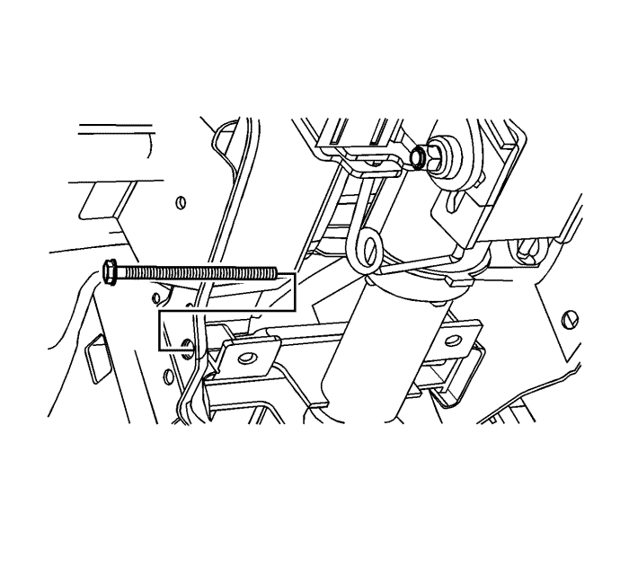
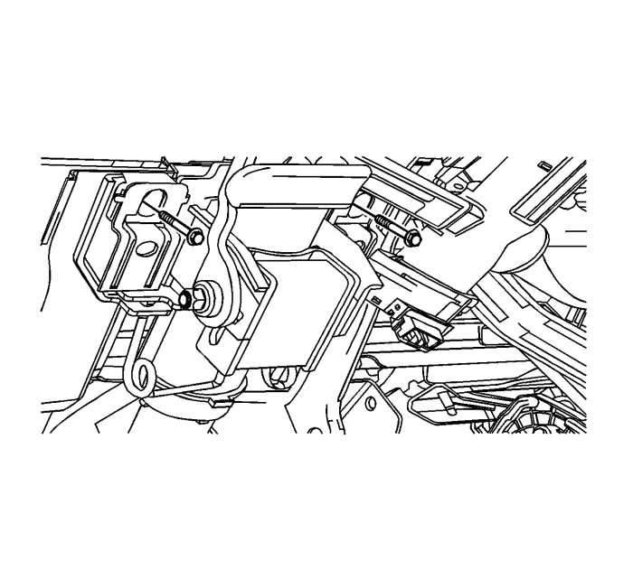

Sustitución de la columna de dirección
Nota: Desmonte la columna de dirección sólo si:| • | Es necesario sustituir la columna de la dirección. |
| • | Es necesario sustituir el alojamiento de la cerradura del encendido. |
| • | Otra operación requiere el desmontaje de la columna de la dirección. |
Procedimiento de desmontaje
Precaución: Con las ruedas del vehículo completamente rectas, asegure el volante empleando el pasador antigiro de la columna de dirección, bloqueo de la columna o una cinta para evitar la rotación. El bloqueo de la columna de dirección evitará daños y un posible mal funcionamiento del sistema SIR. El volante debe asegurarse en posición antes de desconectar los siguientes componentes: | • | La columna de dirección |
| • | El husillo(s) intermedio |
| • | El mecanismo de la dirección |
- Con las ruedas delanteras en la posición de marcha en línea recta, bloquee la columna de dirección.
- Desconecte el cable negativo de la batería y deje el vehículo en reposo durante 1 minuto. Consultar Desconexión y conexión del cable negativo de la batería .
- Desmonte el módulo inflable de retención del volante. Consultar Sustitución del módulo de la sujeción inflable del volante .
- Desmonte el volante. Consultar Sustitución del volante : Carrocería corta → Carrocería larga .
- Retirar las tapas del guarnecido de la columna de dirección. Consultar Sustitución de la cubierta de acabado de la columna de dirección .
- Desmonte el interruptor del intermitente y de los faros. Consultar Sustitución del interruptor de avería de señal de giro : Carrocería corta → Carrocería larga .
- Desmonte el interruptor del limpiaparabrisas y el lavaparabrisas. Consultar Sustitución del conmutador de los limpia-lavacristales .
- Desmonte la bobina. Consultar Sustitución de la bobina del módulo inflable de retención del volante. .
- Desmonte el protector de rodillas del conductor. Consultar Sustitución de la barra de protección de las rodillas del conductor : Carrocería larga → Carrocería corta .
- Desmonte el interruptor del encendido. Consultar Sustitución del interruptor de arranque y encendido .
- Desmonte la luz para la llave de contacto. Consultar Sustitución de la bombilla del cilindro de la cerradura de encendido .
- Desmonte el módulo del inmovilizador, si el vehículo dispone del mismo. Consultar Sustitución del módulo del sistema antirrobo de contenido .
- Desmonte el cilindro de la llave de contacto. Consultar Sustitución del cilindro de la cerradura del interruptor de encendido .
- Desmonte el módulo de control de la dirección asistida, si el vehículo dispone de él. Consultar Sustitución del módulo de control de la servodirección .

- Utilice pintura para realizar marcas de alineación en el husillo intermedio de la dirección y en la parte inferior del eje de la columna de dirección.
- Desmonte el tornillo de sujeción de la junta universal del eje de dirección.
- Desmonte el husillo intermedio del eje de la columna de dirección.
- Desmonte el sensor de ángulo de giro, si el vehículo dispone de él. Consultar Sustitución del sensor de posición del volante .

- Desmonte el tornillo del soporte inferior del conjunto de la columna de dirección.

- Desmonte los tornillos del soporte superior de la columna de la dirección.
Atención: Una vez desmontada la columna de dirección del vehículo, ésta es extremadamente susceptible a sufrir daños. La caída del conjunto de la columna de forma que su extremo resulte golpeado podría doblar el eje de la dirección o soltar las inserciones de plástico que mantienen la rigidez de la columna. Apoyarse sobre el conjunto de la columna podría ocasionar dobleces o deformaciones en su revestimiento. Cualquiera de los daños mencionados podría deteriorar el diseño plegable de la columna. NO golpee el extremo del eje utilizando un martillo, ya que esto podría soltar las inserciones de plástico que mantienen la rigidez de la columna. Si necesita desmontar el volante, consulte el procedimiento de Sustitución del volante incluido en esta sección.
- Desmonte la columna de la dirección del vehículo.
Procedimiento de montaje
- Compruebe que las ruedas delanteras se encuentran en la posición de marcha en línea recta.
- Si va a sustituir la columna de dirección, copie las marcas de alineación de la columna antigua en la nueva columna.
- Posicione la columna de dirección en el vehículo.
- Monte el sensor de ángulo de giro, si el vehículo dispone de él. Consultar Sustitución del sensor de posición del volante .
Nota: Apoye el conjunto de la columna de la dirección hasta que estén apretados los tornillos de fijación. No deje que la columna de la dirección se quede colgando sin apoyo.
- Alinee las marcas e introduzca con cuidado el eje de dirección en la junta universal del husillo intermedio.
Precaución: Consulte Precaución con las fijaciones en la sección Prólogo
- Acople el tornillo de sujeción a la junta universal del husillo intermedio y apriételo a un par de 34 N·m (25 lb. pie).
- Monte el tornillo del soporte inferior del conjunto de la columna de dirección y apriételo a un par de 25 N·m (18 lb. pie).
- Monte los tornillos del soporte superior y apriételos a un par de 22 N·m (16 lb. pie).
- Monte el módulo de control de la dirección asistida, si el vehículo dispone de él. Consultar Sustitución del módulo de control de la servodirección .
- Monte el cilindro de la llave de contacto. Consultar Sustitución del cilindro de la cerradura del interruptor de encendido .
- Monte el módulo del inmovilizador, si el vehículo dispone del mismo. Consultar Sustitución del módulo del sistema antirrobo de contenido .
- Monte la luz para la llave de contacto. Consultar Sustitución de la bombilla del cilindro de la cerradura de encendido .
- Monte el interruptor del encendido. Consultar Sustitución del interruptor de arranque y encendido .
- Monte el protector para las rodillas del conductor. Consultar Sustitución de la barra de protección de las rodillas del conductor : Carrocería larga → Carrocería corta .
- Monte la bobina. Consultar Sustitución de la bobina del módulo inflable de retención del volante. .
- Monte el interruptor del limpiaparabrisas y el lavaparabrisas. Consultar Sustitución del conmutador de los limpia-lavacristales .
- Monte el interruptor del intermitente y de los faros. Consultar Sustitución del interruptor de avería de señal de giro : Carrocería corta → Carrocería larga .
- Monte las cubiertas de guarnecido de la columna de dirección. Consultar Sustitución de la cubierta de acabado de la columna de dirección .
- Monte el volante. Consultar Sustitución del volante : Carrocería corta → Carrocería larga .
- Monte el módulo inflable de retención del volante. Consultar Sustitución del módulo de la sujeción inflable del volante .
- Conecte el cable negativo de la batería. Consultar Desconexión y conexión del cable negativo de la batería .
| © Copyright Chevrolet Europe. All rights reserved |